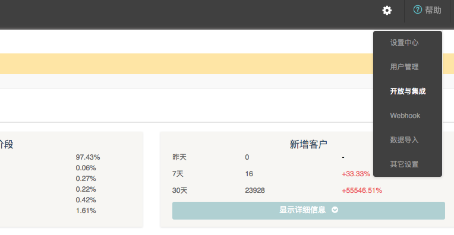
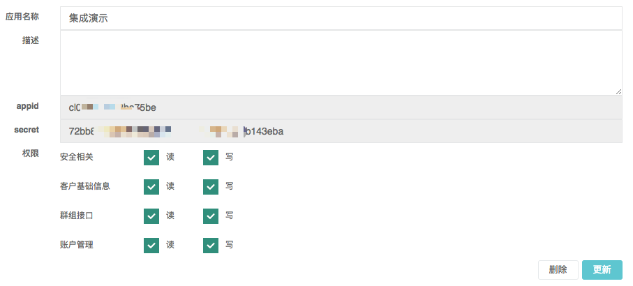

创建集成应用
注意:DM Hub数据接口遵循OAuth 2.0协议，调用所有功能API之前都需要先获取access_token。access_token是调用DM Hub 数据接口的凭证，开发者需要妥善保管。access_token的有效期目前是2小时，需定时刷新。
获取access_token之前需要先在DM Hub设置>开发与集成, 中创建一个应用（以集成演示为例）  
应用创建好后，勾选允许应用所访问接口的权限，点击更新按钮。
每个新创建的应用都会有appid和secret两个数据，这两个数据相当于系统的用户名和密码，开发人员需要妥善保存。
集成系统可以使用appid和secret来调用/oauth/accesstoken接口来获取access_token。
注意：DM Hub的所有接口都必须是用https协议。